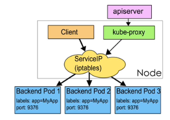
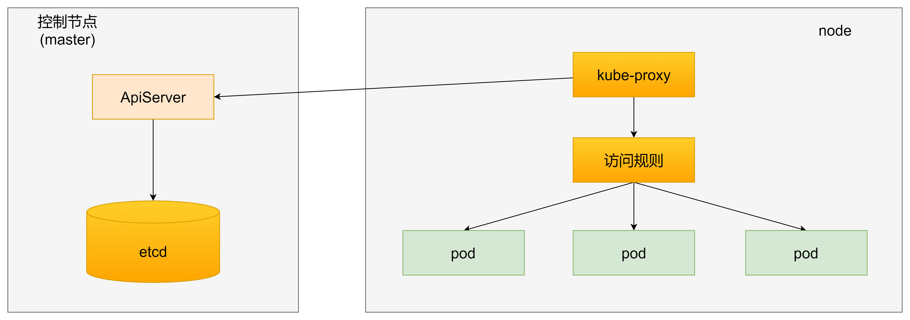

服务发现
现代业务应用发展至今，大部分系统都逐渐发展成为了大型的分布式微服务应用。每一个微服务各司其职，用户的一个请求往往需要由多个微服务之间相互调用才能够完成。当应用迁移到 K8s 时，我们一般会将业务系统中的每一个微服务以某种 K8s 工作负载的形式进行部署，比如最常见的 Deployment。也就是说， 在 K8s 环境下，微服务之间的调用可以理解为是工作负载之间的调用。
换句话说，在 K8s 环境下，微服务之间的调用实际上是 Pod 之间的调用。
要让 Pod 之间能够顺利相互调用，我们面临两个重要的挑战：
- Pod 之间如何找到对方？
- Pod 在重启、更新、销毁的过程中，如何确保 Pod 之间的调用不受影响？
我们知道 Pod 的生命周期是有限的。可以用 ReplicaSet 和Deployment 来动态的创建和销毁 Pod，每个 Pod 都有自己的 IP 地址，但是如果 Pod 重建了的话那么他的 IP 很有可能也就变化了。
这就会带来一个问题：比如我们有一些后端的 Pod 集合为集群中的其他应用提供 API 服务，如果我们在前端应用中把所有的这些后端的 Pod 的地址都写死，然后以某种方式去访问其中一个 Pod 的服务，这样看上去是可以工作的，但是如果这个 Pod 挂掉了，然后重新启动起来了，是不是 IP 地址非常有可能就变了，这个时候前端就极大可能访问不到后端的服务了。
为解决这个问题 Kubernetes 就为我们提供Service对象，Service 是一种抽象的对象，它定义了一组 Pod 的逻辑集合和一个用于访问它们的策略，其实这个概念和微服务非常类似。一个 Serivce 下面包含的 Pod 集合是由 Label Selector 来决定的。

kube-proxy
service在很多情况下只是一个概念，真正起作用的其实是kube-proxy服务进程，每个node节点上都运行一个kube-proxy服务进程，当创建service的时候会通过api-server向etcd写入创建的service信息，而kube-proxy会基于监听的机制发现这种service的变动，然后会将最新的service信息转换成对应的访问规则。

Service
为了解决 Pod IP 不稳定的问题，Service 将一组来自同一个 ReplicaSet 创建的 Pod 组合在一起，并提供 DNS 的访问能力。也就是说，Pod 之间可以通过 Service 域名来进行访问，这种访问方式的好处是，无论 Service 背后一组的 Pod 如何变化，对于其他服务来说都是透明的，服务只需要关注访问 Service 即可，不用关心这个服务是由哪个 Pod 提供的。
这种集群内部的 DNS 能力非常重要，它除了能为我们提供稳定的访问能力，还能够提供负载均衡和会话保持的能力。
Service ➡️ Endpoints ➡️ Pod。
Service 同样在集群内拥有唯一的 IP 地址，并且这个 IP 是稳定的。此外，Service 本身并没有直接提供服务发现的能力，它需要借助 Endpoints 来实现。Endpoints 记录了一组 Pod 的 IP 地址，Service 只需要查看自身所对应的 Endpoints 便能够找到具体的 Pod。
Ingress
Ingress 是 Kubernetes 的一个内置对象，通常我们把 Ingress 看作 Service 之上的 Service。 Ingress 对象只用来声明路由策略，并不处理具体的流量转发。要使得 Ingress 生效，我们还需要额外安装 Ingress-Controller，例如 Ingress-Nginx。
在生产环境中，Ingress-Nginx 一般就是以 Loadbalancer 类型来对外暴露的，Ingress-Nginx 实际上充当的是网关的角色，这样做的好处是， 我们只需要一个负载均衡器实例，通过路由策略，就可以对外暴露所有的业务服务。